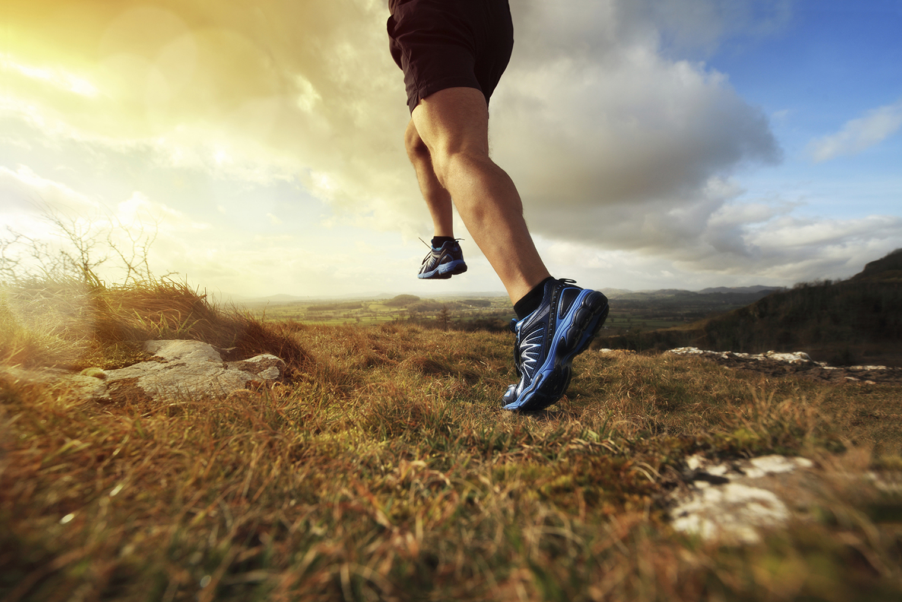

À la Course du Vent : L'Art et la Passion de Courir
La course à pied, une discipline terrestre intemporelle, incarne la quintessence de l'endurance, de la persévérance et de la libération physique.
Courir, que ce soit sur des pistes, des sentiers boisés ou des routes urbaines, engage l'ensemble du corps dans un mouvement rythmique, renforçant les muscles, améliorant la santé cardiovasculaire et stimulant le système respiratoire.

Chaque foulée en course à pied impacte directement les muscles des jambes, des cuisses aux mollets, tout en sollicitant le noyau abdominal et le haut du corps.
La variété des terrains et des inclinaisons offre une diversité de défis, du sprint rapide sur des surfaces plates à la montée exigeante sur des collines escarpées. Les bienfaits de la course à pied s'étendent au-delà de la condition physique, favorisant la coordination, l'équilibre et la souplesse.
La course à pied constitue également une puissante thérapie mentale. Les endorphines libérées pendant l'effort physique procurent une sensation de bien-être, réduisant le stress et améliorant l'humeur.
La concentration requise pour maintenir un rythme régulier ou surmonter des obstacles stimule également la clarté mentale.
Accessible à tous les niveaux, la course à pied offre des possibilités variées, que ce soit pour les joggeurs du dimanche, les coureurs de trail passionnés ou les athlètes professionnels. Des courses locales aux marathons internationaux, la course à pied est célébrée dans le monde entier, et les compétitions telles que les marathons majeurs attirent des participants du globe entier.
En résumé, la course à pied transcende le simple exercice physique pour devenir un mode de vie dynamique. Elle offre des bienfaits physiques, mentaux et émotionnels, tout en créant une communauté mondiale de coureurs partageant une passion commune pour la liberté de mouvement et la recherche de défis personnels. Que ce soit pour la compétition, la détente ou la découverte de nouveaux horizons, la course à pied demeure un moyen puissant de célébrer le potentiel humain.
Liste de marque pour vos matériel de course pro :
Chaussures de course : Nike
Montre de course GPS : Garmin
Chaussettes de compression : Cep Compression
Shorts de course : Under Armour
Casquette de course : Salomon
Ceinture de course : SPIbelt
Gilet hydratation : CamelBak
Brassard de téléphone : TuneBelt